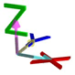

or Ctrl + W
Objects can be moved
along the world axis.
Objects can be rotated

along the world axis.
or Ctrl +O
Objects can be moved

along the object axis.
Objects can be rotated
along the object axis.
MA 3D geometric system lets you define and manipulate objects in 3D space. It features a geometric system architecture that defines the X-Y plane as the ground area with the height as Z -axis. All objects can be moved or rotated along the world- or their own object axis (if the object has been rotated) as described in chapter Stage View. You can switch between the world or object axis via a toolbar button or the keyboard as shown in the following list:
| Operating Elements | Symbols in 3D View | Description |
|---|---|---|
| World axis or Ctrl + W |
Objects can be moved along the world axis. |
|
Objects can be rotated along the world axis. |
||
| Object axis or Ctrl +O |
 | Objects can be moved along the object axis. |
Objects can be rotated along the object axis. |